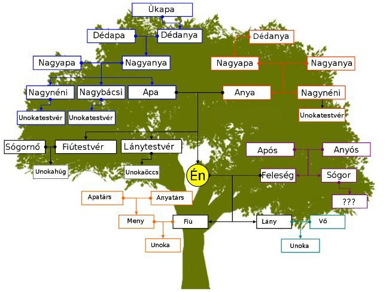
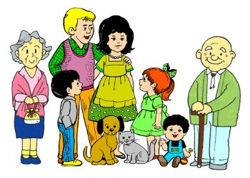

Primii pași · Lecția 009
Familia
Prezintă membrii familiei și urmărește formele prin care exprimi relații de rudenie.
În această pagină
- 1. Copii și părinți
- 2. Bunici
- 3. Nepoți
- 4. Frați și surori
- 5. Veri și verișoare
- 6. Unchi, mătuși și nepoți/nepoate
- 7. Căsătorie
- 8. După botez
- 9. Bun sau vitreg
- Exerciții:
- 1. Alegeți la întâmplare perechi de persoane din imagine și spuneți care este relația dintre ei (în ambele sensuri):
- 2. Care este "inversul" următoarelor relații? (pot fi mai multe răspunsuri corecte)
- Exercițiu:
- 3. Care este înțelesul următoarelor cuvinte compuse?
- Exercițiu
- 4. Alipiți -ság sau -ség la următoarele cuvinte și ghiciți înțelesul cuvântului obținut:
În această lecție învățăm denumirile în maghiară ale relațiilor de familie. Majoritatea acestor cuvinte au echivalente directe în limba română, dar există câteva relații de rudenie care sunt exprimate diferit în cele două limbi.
Desenul de mai jos reprezintă arborele genealogic al unei familii extinse. Conține denumirile rudelor în maghiară și în română din perspectiva personajului din centru (EU/ÉN). (Mulțumim lui pentru ilustrațiile din această lecție.)

Vezi ilustrația în română
Să luăm acum pe rând fiecare membru de familie, trecând în revistă câteva caracterstici mai neobișnuite ale denumirilor în limba maghiară:
1. Copii și părinți
| szülő | părinte |
| anya | mamă |
| apa | tată |
| fiú | fiu (are și sensul "băiat") |
| lány | fiică (are și sensul "fată") |
| gyermek | copil |
| kisgyermek | copilaș (din kis "mic") |
| baba | bebeluș |
| csecsemő | sugar |
| újszülött | nou-născut (din új "nou") |
Alte cuvinte importante:
| ember | om |
| személy | persoană |
| család | familie |
| rokon | rudă |
| férfi | bărbat |
| nő | femeie (persoană adultă de sex feminin, în general) |
| asszony | femeie căsătorită |
| kisasszony | domnișoară (din kis "mic(ă)") |
2. Bunici
| nagyszülő | bunic/bunică (din nagy "mare") |
| nagyanya | bunică |
| nagyapa | bunic |
| nagymama | bunică (mai ales în Ardeal) |
| nagytata | bunic (mai ales în Ardeal) |
Un aspect interesant al limbii maghiare este că există denumiri separate pentru cel puțin cinci generații de părinți:
| apa | tată |
| nagyapa | bunic |
| dédapa | străbunic |
| ükapa | stră-străbunic |
| szépapa | stră-stră-străbunic (din szép "frumos") |
| ősapa | stră-stră-stră-...-străbunic (din ős "strămoș") |
În mod similar se formează numele bunicelor: anya, nagyanya etc.
3. Nepoți
| unoka | nepot/nepoată (al/a bunicilor) |
Cuvântul unoka nu are gen, poate însemna atât "nepot" cât și "nepoată". Folosind aceleași prefixe ca la bunici, se pot forma cuvintele:
| dédunoka | strănepot |
| ükunoka | stră-strănepot |
4. Frați și surori
| testvér | frate sau soră |
| fiútestvér, fivér | frate (din fiú + testvér) |
| lánytestvér | soră (din lány + testvér) |
| húg | soră mai mică |
| nővér | soră mai mare |
| öcs | frate mai mic |
| bátya | frate mai mare |
Foarte des se folosesc ultimele patru denumiri, care fac diferența între frate sau soră
mai mare sau mic(ă).
Testvér în schimb nu indică nici sexul, nici
vârsta.
5. Veri și verișoare
| unokatestvér |
văr/vară/verișor/verișoară (din unoka + testvér, literal: "nepot-frate" sau "nepot-soră") |
6. Unchi, mătuși și nepoți/nepoate
| nagybácsi | unchi (din nagy "mare") |
| nagynéni | mătușă |
| unokaöcs | nepot |
| unokahúg | nepoată |
Atenție, în maghiară unoka înseamnă "nepot" doar în sensul de "copilul copilului". În celălalt înțeles al cuvântului "nepot/nepoată", cel de "copil al fratelui/surorii", spunem unokaöcs (nepot - frate mai mic) pentru băieți și unokahúg (nepot - soră mai mică) pentru fete. Bácsi se spune bărbaților mai în vârstă (similar cu "nene" în română), iar néni se referă la o femeie mai în vârstă, ca "tanti". Ex. "István bácsi", "Ilona néni".
Pentru unchi se poate spune și nagybátya "frate mai mare - mare". Cuvântul bácsi are rădăcina comună cu bátya. În trecut oamenii se adresau și cu "bátyám" (fratele meu mai mare) sau "öcsém" (fratele meu mai mic) vorbind cu persoane mai în vârstă, respectiv mai tineri. Această adresare există și în limba română, când spunem "frate" unui prieten cu care de fapt nu suntem frați.
7. Căsătorie
Înaintea căsătoriei:
| barát | prieten |
| barátnő | prietenă (lit. prieten-femeie) |
| szerető | iubit(ă), amant(ă) |
| menyasszony | mireasă (lit. noră-femeie) |
| vőlegény | mire (lit. ginere-fecior) |
| jegyes | logodnic(ă) |
| élettárs | concubin(ă), din (élet "viață", társ "tovarăș") |
Și după:
| férj | soț |
| feleség | soție |
| házasság | căsătorie |
| esküvő | ceremonie de căsătorie |
| lakodalom | nuntă |
| elvált | divorțat(ă) |
| özvegy | văduv(ă) |
Familia extinsă:
| meny | noră |
| vő | ginere |
| anyós | soacră |
| após | socru |
| anyatárs | cuscră (lit. mamă-tovarășă) |
| apatárs |
cuscru (lit. tată-tovarăș, társ (de origine slavă, aceeași ca a lui "tovarăș") |
| sógor | cumnat |
| sógornő | cumnată (lit. cumnat-femeie) |
8. După botez
Similar limbii române, și în maghiară există conceptul de naș/nașă, resp. fin/fină. Aceste cuvinte se formează cu prefixul kereszt "cruce", din verbul keresztel "a boteza".
| keresztapa | naș |
| keresztanya | nașă |
| keresztfiú | fin |
| keresztlány | fină |
Cuvântul koma are înțelesul de "cumătru", adică se referă la relația între nași și părinți. De multe ori, relația naș-părinte este una reciprocă, "eu sunt naș al copiilor tăi, tu ești naș al copiilor mei". Astfel, mai ales la țară, "koma" e folosit și în sensul de "prieten apropiat", mai ales în Ardeal (are aceeași origine slavă ca și "cumătru"). Un personaj frecvent în basme și în cântece de copii este "róka koma", un vulpoi viclean (lit. "cumătrul vulpoi").
9. Bun sau vitreg
Cuvântul "vitreg" în maghiară este mostoha, și are aceleași conotații negative,
de ex. mostoha sors "soartă vitregă".
Acest cuvânt se folosește și ca prefix, de exemplu: mostohatestvér "frate/soră
vitreg/vitregă", mostohaanya "mamă vitregă" etc.
Frați și surori cu un singur părinte comun se pot numi și féltestvér (din
fél "jumătate").
Copilul fără părinți se numește
árva "orfan".
"Árva" se folosește și în sens figurat, de "singur":
Nincs egy árva lejem se.
"Nu am nici un singur leu." [lit. Nu este un orfan leu-al-meu nici.]
Pentru frați/surori și părinți buni se folosește prefixul édes "dulce", ex. édestestvér.
De obicei copiii își spun părinților édesanyám (lit. dulce-mamă-mea) și édesapám (lit. dulce-tatăl-meu). În aceste construcții, édes nu are neapărat o încărcătură afectivă (cum ar fi "dragă mamă"), dar totuși édesanyám și édesapám sună mai frumos decât doar anyám și apám.
Exerciții:
Puteți scrie răspusurile la exerciții pe .
1. Alegeți la întâmplare perechi de persoane din imagine și spuneți care este relația dintre ei (în ambele sensuri):

2. Care este "inversul" următoarelor relații? (pot fi mai multe răspunsuri corecte)
férj - feleségtestvér - testvér
nagybácsi - unokaöcs sau/vagy unokahúg
sógor - ...
nagyapa - ...
unokatestvér - ...
nagynéni - ...
anyatárs - ...
unoka - ...
meny - ...
dédunoka - ...
öcs - ...
anyós - ...
Atât despre familie. Dacă tabelele gramaticale din lecțiile trecute vi s-au părut complicate, în această lecție facem ceva mai simplu și poate mai interesant. Mai întâi construim cuvinte noi combinând cuvinte simple, apoi adăugăm sufixe cuvintelor și vedem cum se schimbă înțelesul lor.
Probabil că ați observat deja că maghiara are o tendință de a construi cuvinte compuse și în cazuri în care în română am folosi mai multe cuvinte scrise separat. De multe ori ordinea părților componente este inversă în cele două limbi.
Exemple:
| olvasólámpa | lampă pentru citit (olvas "citește", olvasó "de citit", lámpa "lampă") |
| iskolatáska | ghiozdan (iskola "școală", táska "geantă") |
| sofőriskola | școală de șoferi (sofőr "șofer") |
| karóra | ceas de mână (kar "braț", óra "ceas") |
| könyvszekrény | bibliotecă (obiectul de mobilier) (könyv "carte", szekrény "dulap") |
| repülőgép | avion (repül "zboară", repülő "zburător", gép "mașină, aparat") |
| központ | centru (köz "mijloc", pont "punct") |
| városközpont | centrul orașului (város "oraș") |
De obicei, dacă cunoaștem înțelesul părților componente, putem descifra ușor înțelesul cuvântului compus.
Exercițiu:
3. Care este înțelesul următoarelor cuvinte compuse?
| repülőtér | repülő "zburător", tér "spațiu" |
| konyhaszekrény | konyha "bucătărie", szekrény "dulap" |
| télikabát | tél "iarnă", téli "de iarnă", kabát "palton" |
| számítógép | számító "de calcul", gép "mașină, aparat" |
| mosógép | mosó "de spălat" |
| varrógép | varró "de cusut" |
| hajszárító | haj "păr", szárít "usucă", szárító "uscător" |
| hálószoba | háló "de dormit", szoba "cameră" |
| hálókocsi | kocsi "mașină, căruță" |
| hálóing | ing "cămașă" |
| hálózsák | zsák "sac" |
| gyorsvonat | gyors "rapid", vonat "tren" |
| tehervonat | teher "greutate (de transportat)" |
| űrhajó | űr "spațiu", hajó "navă, vapor" |
| keresztrejtvény | kereszt "cruce", rejtvény "ghicitoare, rebus" |
| taxisofőr | taxi "taxi", sofőr "șofer" |
| sofőrvizsga | vizsga "examen" |
| háztető | ház "casă", tető "acoperiș" |
| lábfej | láb "picior", fej "cap" |
| kőfal | kő "piatră", fal "zid" |
| vaskapu | vas "fier", kapu "poartă" |
| hóvihar | hó "zăpadă", vihar "furtună" |
| vaddisznó | vad "sălbatic", disznó "porc" |
| erőmű | erő "forță, putere", mű "operă" sau "uzină" |
| atomerőmű | atom "atom" |
| napelem | nap "soare", elem "baterie" |
Cuvintele compuse sunt așa de numeroase, încât există un joc de a construi lanțuri cât mai lungi de cuvinte, în care fiecare pereche învecinată are înțeles.
Exemplu: teher - taxi - sofőr - vizsga - időszak (vizsga "examen", időszak "perioadă de timp"). Ghiciți ce înseamnă și perechile din acest lanț. Încercați să formați lanțuri similare.
Un alt procedeu de a forma cuvinte noi este prin sufixe. În această lecție învățăm o pereche de sufixe des folosite.
În lecțiile precedente am întâlnit multe cuvinte care se termină în "ság" sau "ség":
egészség "sănătate", de exemplu în expresia
Egészségedre! "În sănătatea ta!"
sau
újság "știre,
noutate, ziar".
Cuvântul egészség "sănătate" provine din cuvântul de bază egész "întreg", și sufixul -ség, adică literal înseamnă "întregime", sau "starea de a fi întreg"
Cuvântul új "nou" primește sufixul -ság și devine újság "noutate".
Alte exemple:
|
barát "prieten" > barátság "prietenie" |
|
jó "bun" > jóság "bunătate" |
|
nagy "mare" (adjectiv) > nagyság "mărime" (dimensiune) sau "starea de a fi mare" |
|
szabó "croitor" > szabóság "croitorie" (atelierul croitorului, dar și în sensul de "starea de a fi croitor", ca în propoziția "Croitoria este grea.") |
|
mester "maestru" > mesterség "meserie", "meșteșug" (de la cuvântul maghiar), dar și "starea de a fi maestru" |
|
hír "veste, știre" > híres "vestit, cunoscut" > híresség "celebritate" |
|
beteg "bolnav" (vezi "beteag") > betegség "boală" (de aici "beteșug") |
|
pék "brutar" > pékség "brutărie" |
|
szép "frumos" > szépség "frumusețe" |
|
zöld "verde" > zöldség "verdeață" sau "legumă" |
Sufixele -ság, -ség exprimă deci o schimbare de înțeles care și în română este exprimată de obicei prin (diferite) sufixe. Limba română a preluat câteva cuvinte din maghiară formate astfel, de exemplu "meșteșug" (de la mesterség), "beteșug" (de la betegség) sau belșug (de la bőség).
Forma -ság sau -ség a sufixului se alege conform regulii armoniei vocalice (vezi lecția 005), adică depinde de vocalele din rădăcina cuvântului.
Exercițiu
4. Alipiți -ság sau -ség la următoarele cuvinte și ghiciți înțelesul cuvântului obținut:
| rokon "rudă" |
| igaz "adevărat, drept" |
| szabad "liber" |
| finom "gustos" |
| boldog "fericit" |
| mély "adânc" |
| magas "înalt" |
La sfârșit, un test pentru recapitularea celor învățate în lecțiile de până acum. Testul este similar cu cel din lecția 004. Alegeți varianta corectă (acolo unde apar meniuri), ținând cont de regulile gramaticale și de înțelesul propozițiilor. Apăsând butoanele "Verifică", aflați dacă ați răspuns corect sau nu. Toate formele dintr-un dialog trebuie să fie corecte pentru a primi răspunsul "corect". La fiecare întrebare doar o singură variantă este corectă.
La fiecare dialog am dat traducerile cuvintelor noi. După ce apăsați butonul, puteți citi traducerea întregului dialog în limba română. Dacă nu este clar de ce o variantă este cea corectă, întrebați pe .
Az utcán / Pe stradă
- Szia, mi ?
- Szia, rendben, köszönöm.
- Na , vigyázz magadra.
- OK, is, .
- Szervusz.
kenyér "pâine"
friss "proaspăt(ă)"
meleg "cald(ă)"
kér "(el/ea) cere, (dvs) cereți"
kérek "(eu) cer"
kifli "corn, croissant"
inkább "mai bine"
perec "covrig"
rendben "în regulă" (din rend "regulă")
összesen "în total"
A pékségben / La brutărie
- Jó napot!
- Jó napot, van ?
- Igen, .
- ?
- Igen, még meleg. Hányat kér?
- Kérek , és kiflit is.
- A kifli friss. Kér inkább ?
- Igen, a perec is jó. lesz?
- Összesen tizenkét lej.
- Rendben, .
nézek "(eu) mă uit"
megyünk "(noi) mergem"
film "film"
amerikai "american"
vígjáték "comedie"
jövök "(eu) vin"
lesz "va fi"
mozi "cinema"
Telefonon / La telefon
- Halló, Péter .
- Szervusz Péter, vagy?
- Jól, köszönöm. mit csinálsz ma este?
- Itthon , nem csinálok , csak TV-t nézek.
- megyünk , jösz te is?
- Milyen lesz?
- Egy amerikai film. Vígjáték.
- OK, jövök én , hánykor lesz?
- A film van, mi fél nyolckor találkozunk a mozi .
- Rendben, leszek. Viszlát.
- Szia.
ing "cămașă"
szekrény "dulap"
polc "raft"
nadrág "pantaloni"
zokni "șosetă"
nyakkendő "cravată" (din nyak "gât" + kendő "batic")
A szobában / În cameră
- van a fehér ing?
- Ott a szekrényben, a .
- És a kék nadrág?
- Az is ott van, a ingek alatt.
- A fekete zokni a szekrényben van?
- Nem, a fekete zokni még a van, de a szürke ott a nadrágok mellett. A nyakkendő ott a .
busz "autobuz"
megyek "(eu) merg"
repülsz "(tu) zbori"
Franciaország "Franța"
érdekes "interesant"
mennyit "cât" (acuzativ)
maradsz "(tu) rămâi"
csak "doar"
hét "șapte, săptămână"
azután "după aceea"
jövök "(eu) vin"
neked "ție"
A buszmegállóban / În stația de autobuz
- Szervusz.
- Szervusz, mit csinálsz?
- Várom a , megyek a .
- repülsz?
- , Franciaországba repülök, Párizsból megyek egy .
- Érdekes. Mennyit maradsz Franciaországban?
- Párizsban csak , Lyonban a konferencián egy hetet. Azután jövök .
- Na jó, vigyázz magadra és jó utat.
- Köszönöm, minden neked is.